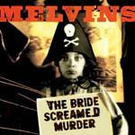
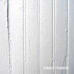
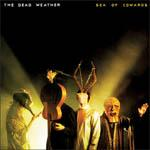

Music Reviews
-
Paul Simpson Man In A Burning Anorak Volume 1 + 2
The Wild Swans frontman releases an album of unused songs and one buried album. D.C. Harrison finds out just what he's been keeping hidden all these years.
D.C. Harrison reviews... -

Marina and the Diamonds The Family Jewels
Hotly-tipped by just about everyone, can Anglo-Hellenic songstress Marina and the Diamonds live up to expectations on The Family Jewels?
Joe Rivers pens his thoughts... -

The Melvins The Bride Screamed Murder
After 26 years and too many albums to count, The Melvins end their third decade with a bit of a march and a Who cover.
Sean Caldwell reviews... -

Fabulous Diamonds Fabulous Diamonds II
Challenging song arrangements with menacing energy, Fabulous Diamonds are firm advocators of music as a free, abstract art form with self-assurance and experimental prowess.
Juan Edgardo Rodríguez questions if you've been experienced... -
Jamie Lidell Compass
Lidell's latest was written and recorded in one apparently inspired month. The results aren't always as inspired as we might hope, but at points Compass surpasses anything Lidell has done before.
Paul Fowler reviews... -

Wild Nothing Gemini
Jack Tatum, aka Wild Nothing, drowns his sorrows over an array of indie pop references with not so distinctive results.
Juan Edgardo Rodríguez thinks this is appealing if you've just discovered the eighties... -

Beach Fossils Beach Fossils
In a time when sun-drenched pop is starting to outstay it’s welcome, Beach Fossils try to outshine their contemporaries with more distinctive melodic hooks and a welcome variation of influences.
Juan Edgardo Rodríguez reviews... -
Sleigh Bells Treats
Sleigh Bells live up to the hype. They're loud, unique, interesting and fun all at the same time.
Andrew Baer is gonna have to replace his speakers soon... -

The Futureheads The Chaos
Tireless Sunderland-based quartet's fourth album retains their spastic, frenetic energy with a lustrous, more straightforward production.
Juan Edgardo Rodríguez could do calisthenics to this... -

The Dead Weather Sea Of Cowards
The second album from his third band The Dead Weather, Jack White wrestles in the murk with Alison Mosshart for Sea Of Cowards.
Sean Caldwell reviews...